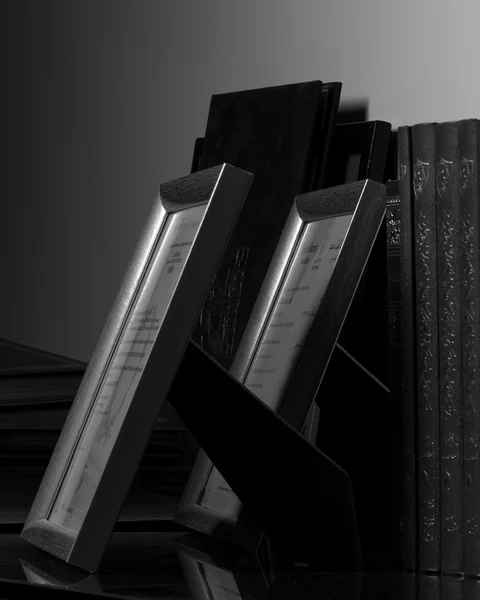

مكتب ياسر بن سليماناليوسف
Yasir S. Alyousef Law Firm & Notarization
مكتب للمحاماة والتوثيق في حي الربوة بالرياض. نترافع عن موكلينا في أي منطقة من مناطق المملكة وأمام أي محكمة، من بداية القضية مروراً بالمحاكمة والاستئناف وحتى النقض.

أربعة مبادئ نلتزم بها
الاستقلالية.
الدفاع عن حقوقك وحمايتك.
احترام صارم لقواعد أخلاقيات المهنة، وفي مقدمتها سرّ المهنة.
المرونة وسرعة الاستجابة والإبداع.
من بداية القضية حتى النقض
نمثّل موكلينا في أي منطقة من مناطق المملكة وأمام أي محكمة، من بداية القضية مروراً بالمحاكمة وما بعدها.
- 01
التفاوض على تسليم النفس
نرتّب معك كيف ومتى تسلّم نفسك، ومحاميك إلى جانبك.
- 02
توجيه الاتهام
نحضر معك حين توجَّه إليك التهمة.
- 03
إجراءات ما قبل المحاكمة
مراجعة الملف والأدلة والإجراءات قبل الجلسة الأولى.
- 04
التفاوض قبل المحاكمة
الحديث مع الطرف الآخر قبل المحاكمة، متى كان ذلك في مصلحتك.
- 05
المحاكمة
من القضايا البسيطة إلى القضايا المعقدة.
- 06
إجراءات ما بعد الحكم
متابعة الحكم خطوة بخطوة.
- 07
الاستئناف
الاعتراض على الحكم أمام محكمة الاستئناف.
- 08
النقض
المرحلة الأخيرة، أمام المحكمة العليا.
القضايا التي نتولاها
القضايا الجزائية والمالية والإدارية والأحوال الشخصية والملكية الفكرية والعقار. افتح أي سطر لترى القضايا المدرجة تحته.
01القضايا الجزائيةالدفاع الجنائي
- الابتزاز
- المخدرات
- حيازة الأسلحة
- القيادة تحت تأثير المسكر
- التزوير
- الخطف
- السرقة بالإكراه
- التحرش
- الاعتداء والتهديد
- غسل الأموال
- السرقة
- الحوادث المرورية
02القضايا المالية والديون والضرائبالمالية
- المنازعات المالية
- الديون
- الضرائب
- ضريبة القيمة المضافة
03القضايا المصرفية والإداريةالبنوك والجهات الحكومية
- القضايا المصرفية
- القضايا الإدارية
04الأحوال الشخصيةالأسرة
- قضايا الأحوال الشخصية
05الملكية الفكريةالأفكار والأعمال الإبداعية
- الملكية الفكرية
- حقوق المؤلف
06العقارالعقارات
- القضايا العقارية
التوثيق في المكتب نفسه
مرخّص للتوثيق من وزارة العدل، ترخيص رقم 40/1450. صكوك العقار والإقرارات تُوثَّق هنا، بجانب الاستشارة القانونية.
احجز موعد توثيق: +966 11 220 0360 →العقار
- إفراغ الملكية
- الرهن
- تعديل الرهن
- فكّ الرهن
الإقرارات
- الإقرار بدين
- الإقرار بسداد دين
- الوكالات
- عقود الشركات وملاحق تعديلها
- إقرارات أخرى
ياسر بن سليمان اليوسف
Yasir Sulaiman Alyousef
- 2015
ماجستير في قانون الفضاء السيبرانيكلية العلوم القانونية والسياسية والاجتماعية، جامعة Lille II Droit et Santé، فرنسا. بتقدير “Assez Bien”.
- 2012
بكالوريوس في القانونكلية الحقوق والعلوم السياسية، جامعة الملك سعود. بتقدير “جيد جداً”.
موقع المكتب
الأمير بدر بن عبدالعزيز، حي الربوة، الرياض 12821
ص.ب 45199 الرياض 11512
- هاتف المكتب+966 11 220 0360
- الجوال+966 54 838 8884
- البريدcontact@alyousef.law
- إكس@alyousef_law